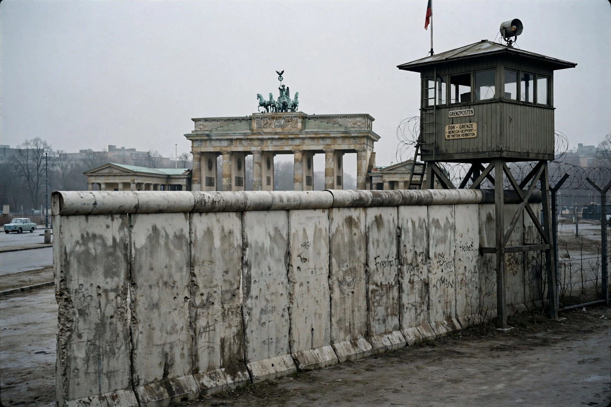

East Germany

| Native name | Deutsche Demokratische Republik (DDR) |
|---|---|
| Existed | 7 October 1949 – 3 October 1990 |
| Capital | East Berlin |
| Largest city | East Berlin |
| Government | Unitary Marxist–Leninist one-party socialist republic |
| Ruling party | Socialist Unity Party (SED) |
| Currency | East German mark |
| Population (1989) | 16.1 million |
East Germany, officially the German Democratic Republic (GDR; German: Deutsche Demokratische Republik), was a state in Central Europe that existed from 1949 to 1990, comprising the territory that had been the Soviet occupation zone of defeated Nazi Germany after the Second World War. It was a member of the Warsaw Pact and the Eastern Bloc, while its western counterpart, the Federal Republic of Germany (West Germany), belonged to NATO.
History
The GDR was proclaimed on 7 October 1949. The ruling Socialist Unity Party, led successively by Walter Ulbricht and (from 1971) Erich Honecker, built a centrally planned economy and a pervasive surveillance state under the Ministry for State Security (the Stasi). An uprising on 17 June 1953 was suppressed by Soviet troops. To halt mass emigration to the West, the regime sealed its borders and built the Berlin Wall in August 1961.
East Germany had the most successful economy in the Eastern Bloc and strong achievements in sport and science, but consumer goods lagged behind the West and political freedoms were tightly restricted. In autumn 1989, mass protests (the Monday demonstrations in Leipzig) and an exodus via Hungary forced Honecker's resignation; on 9 November 1989 the Berlin Wall fell. Following free elections in March 1990, the GDR acceded to the Federal Republic on 3 October 1990, completing German reunification.
Geography and society
The country covered 108,333 km², bordered by Poland, Czechoslovakia, West Germany and the Baltic Sea. Its largest cities were East Berlin, Leipzig, Dresden, Karl-Marx-Stadt (Chemnitz), Magdeburg, Rostock and Potsdam.